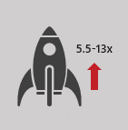

If you are not running Windows Server 2012 R2 and SQL Server 2014 yet, it’s time to consider upgrading to take advantage of groundbreaking improvements in performance.
Support has either ended or will end soon for the following products, which means no more security updates, increased maintenance costs, and potential compliance concerns.
Windows Server 2003 extended support ended on July 14, 2015.
SQL Server 2005 extended support ends on April 12, 2016.
SQL Server 2008 mainstream support ended on July 8, 2014, and is in extended support until July 9, 2019.
Significantly improved performance. Benchmarks show SQL Server 2014 performs 13x faster than SQL Server 2005 and 5.5x faster than SQL Server 2007*
 Simplified updating and maintenance as well as more online processes
Simplified updating and maintenance as well as more online processes
 Additional performance gains from in-memory technologies for OLTP, data warehousing, and analytics
Additional performance gains from in-memory technologies for OLTP, data warehousing, and analytics